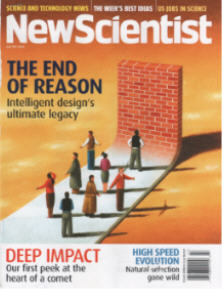
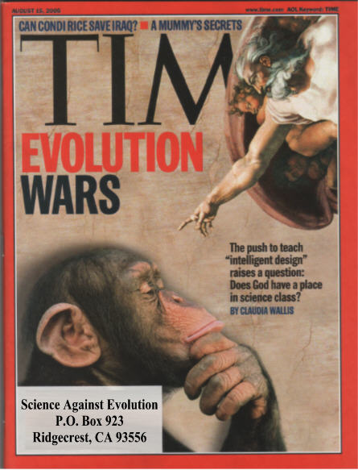

| Evolution in the News - August 2005 |
| by Do-While Jones |
It is time to go back to school. Science teachers are making their lesson plans. Therefore, it is time for the evolutionists to fire up the propaganda machine to try to censor any opposition to the theory of evolution. Time, Newsweek, and New Scientist tried to rally evolutionists.
|
Eighty years after the Scopes "monkey trial," the threat to science and reason comes less from fundamentalists who believe the earth was created in six days than from sophisticated branding experts and polemical [warlike, hostile 1] Ph.D.s who are clever enough to refrain from referring to God or even the Creator, and have now found a willing tool in the president of the United States. 2 |
Notice how emotionally charged the attack is. Questioning the validity of a failing scientific theory is called a "threat to science and reason." The proponents of Intelligent Design (ID) are described as "sophisticated branding experts" presumably because they have cleverly packaged creationism in a new, sneakier form. The ID proponents are clever, "polemical Ph.D.s" who are manipulating the president of the United States to achieve their dastardly goal of defeating science and reason. Oh, dear, how can we keep the ID proponents from destroying western civilization?
 |
The cover of the July 9-15, 2005, issue of New Scientist proclaimed that Intelligent Design's ultimate legacy will be "the end of reason." The cover art shows scientists coming up against a brick wall, with no place to turn. In their editorial they explained,
In fact, belief in evolution is more likely to stifle useful research than belief in intelligent design. You perhaps know that if a starfish loses one of its five arms, it can grow a replacement arm, just like a lizard can re-grow a tail. If a person loses an arm, it won't grow back. |
A scientist who believes in Intelligent Design is likely to recognize that it was a smart decision to design the starfish this way. The next logical step is to try to figure out how the designer did it. Once that is known, the next logical step is to try to figure out how to make human cells respond like starfish cells, so that not only arms, but other body parts could be made to re-grow from the surrounding tissue.
A scientist who believes in evolution is likely to recognize that starfish and lizards both have the ability to re-grow lost body parts, so they must have evolved from a common ancestor. This could lead him to try to construct an ancestral tree to find this common ancestor. The speculative tree is published, and a bunch of other evolutionists spend lots of time arguing about whether the tree is correct or not. That's what we call "stifling research."
Biologists can study bumble bee wings, butterfly wings, dragonfly wings, and bird wings. They can measure the efficiency of different kinds of wings. A scientist who believes in Intelligent Design is likely to wonder why a designer would make so many different kinds of wings. What makes each different kind of wing better for a particular environmental niche? That knowledge could lead to the design of improved aircraft. An evolutionist is likely to waste his time trying to figure out when in evolutionary history the wings evolved.
Contrary to what the New Scientist cover says, evolutionary theory is the real "end of reason" because evolutionary theory says there was no reason to begin with. All life forms are the result of undirected chance. There is no reason for anything. It all just happened. Intelligent Design starts from the premise that everything was designed for a reason. Therefore, it is natural for humans to try to figure out what the reason was, and benefit from the knowledge.
Evolutionists have conveniently forgotten that modern science is the heritage of creation science. Great scientists, like Isaac Newton, believed in a God of order, and studied nature to learn more about God and His laws. Belief in creation wasn't "the end of reason" for Newton. He didn't just say, "God did it," and quit.
Despite this, evolutionists want to scare people into believing that if we allow ID into the classroom, something terrible will happen to the U.S. science program.
|
... [the push for Intelligent Design] comes at a time when U.S. science is perceived as being under fresh assault politically and competitively. Just last week, developments ranging from flaws in the space program to South Korea's rapid advances in the field of cloning were cited as examples that the U.S. is losing its edge. 4 |
What does the theory of evolution have to do with flaws in the space program? If we spent more time teaching evolution, how would that help keep foam insulation on booster rockets? Cloning doesn't depend on evolution, either. In fact, the less time wasted on trying to figure out how dinosaurs evolved into birds, the more time would be available for scientists to devote to space research and cloning. But evolutionists try to scare people into thinking that if evolution isn't taught in public schools, then the whole science program will go down the drain.
|
[Intelligent Design's] basic claim--that the human cell is too complex to be explained by natural selection--is unproven and probably unprovable. ID walks like science and talks like science but, so far, performs in the lab worse than medieval alchemy. 5 |
In response, we would say, "Evolution's basic claim--that the origin of all the different kinds of living cells can be explained by natural selection--is unproven and probably unprovable. Evolution walks like science and talks like science but, so far, performs in the lab worse than medieval alchemy." If unprovability is justification for keeping ID out of the science classrooms, then it is justification for keeping evolution out of the science classrooms, too.
|
Brown University biologist Kenneth Miller (who attends mass every week) says the "unspoken message" peddled by the Discovery Institute is that evolution is the single shakiest theory in science. In fact, despite its flaws, it remains among the most durable theories in all of science. 6 |
Does the fact that Miller attends mass every week prove he is a better scientist than the infidels at the Discovery Institute? Is that what the implication is?
Evolution certainly is a shaky theory. It might even be the shakiest theory in science (but there are some bizarre quantum and string theories that are also vying for that title). The theory of evolution has lots of major flaws, which we expose every month. These are the flaws that evolutionists want to censor from the science curriculum.
Miller foolishly brings up durability. Darwin's theory has only been around since 1859. That's not very long at all. Would you like to give me a dollar for every scientific theory I could name that has been around longer? I'd be glad to send you a list along with a big bill. (Think of all the theories proposed by Newton, Maxwell, Copernicus, Archimedes, etc., just for a start.) But if durability is the measure of truth, what can one conclude about the truth of evolution compared to the truth of six-day creation? Which belief has endured longer? The fact that evolutionists have been wrong since 1859 is not a compelling argument. Durability is not an accurate indicator of truth.
The Time magazine cover asked the question, "Does God have a place in science class?" Evolutionists typically argue that opposition to evolution is religiously motivated. They try to counter this by arguing that evolution and religion are compatible. What they don't seem to realize is that only a small portion of the opposition is religiously motivated. The evidence is right in front of their faces, and has been for a long time. Last November we reported on a National Geographic article containing statistics showing that the number of people who oppose evolution far exceeds the number of religious fundamentalists. This should have showed National Geographic that the opposition isn't entirely religiously motivated, but they wrote it off as evidence that people don't understand their own religious beliefs. Because they erroneously think this is a question of religion versus science, evolutionists often make statements like this one:
|
 |
They just don't get it. The reason why ID is gaining in popularity so much is that it allows educated atheists and agnostics, who see the scientific impossibility of evolution clearly, to reject evolution without having to embrace any religion (and the behavioral restrictions that generally accompany religion). ID gives educated people the freedom to reject evolution without having to believe in judgment, pay tithe, keep Sabbath, love enemies, or any of those other obnoxious religious trappings.
Therefore, when evolutionists argue that you can believe in evolution and believe in the Bible, too, their argument has absolutely no appeal to ID proponents.
|
The scholarly articles are often well written and provocative. But the science within these [Intelligent Design] papers has been demolished over and over by other scientists. 8 |
Yes, the ID papers are well written, but they have not been refuted. That's why evolutionists boycotted the Kansas hearings. If they could have refuted the ID papers, that would have been the place to do it. The argument that evolution is so obviously true that it needs no defense also falls on deaf ears because more and more people have examined the scientific evidence and see that science is against evolution.
If the ID papers have been demolished over and over, why do the points raised in them have to be answered in order to win the Prize described in this month's feature article?
|
Scientists say it is, in fact, easy to gainsay the intelligent-design folks. Take Behe's argument about complexity, for example. "Evolution by natural selection is a brilliant answer to the riddle of complexity because it is not a theory of chance," explains Dawkins. "It is a theory of gradual, incremental change over millions of years which starts with something very simple and works up along slow, gradual gradients to greater complexity. Not only is it a brilliant solution to the riddle of complexity; it is the only solution that has ever been proposed." 9 |
That's an absolutely fact-free answer. There is no evidence that gradual, incremental change by natural selection can create complexity.
|
Darwin's venerable theory is widely regarded as one of the best-supported ideas in science, the only explanation for the diversity of life on Earth, grounded in decades of study and objective evidence. 10 |
That's just plain nonsense. There is absolutely no objective evidence or scientific support for the idea that one kind of creature can evolve into another kind.
Evolution by natural selection isn't "the only solution that has ever been proposed" or "the only explanation for the diversity of life on Earth". Intelligent Design is another solution that has been proposed. That's why there is an argument about what to teach in schools.
|
As for gaps in the fossil record, Dawkins says, that is like detectives complaining that they can't account for every moment of a crime--a very ancient one--based on what they have found at the scene. ... "The pattern," says Dawkins, "is precisely what you would expect if evolution would happen." 11 |
The fossil record isn't what Darwin expected. Gould came up with Punctuated Equilibrium to try to explain why the fossil record isn't what Darwin expected it to be.
|
[Dawkins] cites biologist J.B.S. Haldane who, when asked what would disprove evolution, replied, "fossil rabbits in the Precambrian era ..." 12 |
What would happen if one really did find a fossil rabbit in a Precambrian rock? Evolutionists would simply say that the rock must have been misidentified. It can't be Precambrian because it has a fossil mammal in it. Rocks are classified by the kinds of fossils they contain. If a rock has a fossil rabbit in it, it can't be Precambrian by definition.
The Time article includes a sidebar that addresses Behe's assertion that the eye could not be the product of accidental mutations.
|
It's easy to imagine how random mutations might have produced a patch of light-sensitive cells that helped a primitive creature tell day from night. You can also imagine how another mutation might have bent this patch of cells into a concave shape that could detect the direction of a light or shadow was coming from--helping creatures with the mutation stay clear of predators. Simple structures that enable an organism to do one thing--follow the light--can easily get co-opted for a different and more complex function, like sight. The fact that there is no fossil evidence of the interim steps cannot be taken as proof that a designer--intelligent or otherwise--deliberately skipped them. 13 |
It's easy to imagine how random mutations might have produced different colored dots on pieces of paper. You can also imagine how another mutation stapled these pieces of paper together into a magazine. The fact that there is no evidence of interim steps cannot be taken as proof that an author--intelligent or otherwise--wrote the sidebar.
Since when is science based on imagination? Since there isn't any experimental evidence to back it up, we suppose.
It must be a lot easier for a journalist to imagine how random changes could create an eye than it is for an engineer who spent years designing optical seekers for air-to-air missiles to imagine it, because the journalist has so little understanding of optics and image processing.
The reason why there is so much scientific opposition to the theory of evolution is that modern science has helped us see that these imaginary tales are contrary to real scientific laws. Random mutations do not produce any information. Therefore, random mutations cannot produce the genetic information necessary to build eyes, or anything else.
No argument in favor of evolution would be complete without some character assassination. The Newsweek article concludes with personal attacks against Bill O'Reilly and Dr. James Dobson, and criticism of President Bush's policies.
If the theory of evolution could stand critical analysis, it would not be necessary to divert attention away from the scientific facts by bringing in personalities or politics.
With enemies like these, we don't need any friends. These pathetic, transparent attempts to defend evolution all fail miserably. The evolutionists' inability to defend evolution is a stronger argument against evolution than anything we can write.
| Quick links to | |
|---|---|
| Science Against Evolution Home Page |
Back issues of Disclosure (our newsletter) |
| Web Site of the Month |
Topical Index |
Footnotes:
1
Webster's Ninth New Collegiate Dictionary explanation of "polemic".
2
Alter, Newsweek, August 15, 2005,"Monkey See, Monkey Do", page 27
(Ev+)
3
New Scientist, July 9-15, 2005, "No contest", page 5, https://www.newscientist.com/article/mg18725072-800-creationism-against-darwinism-no-contest/
(Ev+)
4
Wallis, Time, August 15, 2005, "The Evolution Wars", page 28
(Ev+)
5
Alter, Newsweek, August 15, 2005,"Monkey See, Monkey Do", page 27
6
ibid.
7
Disclosure, November 2004, "Was National Geographic Wrong?"
8
Alter, Newsweek, August 15, 2005,"Monkey See, Monkey Do", page 27
9
ibid.
10
ibid., page 32
11
Wallis, Time, August 15, 2005, "The Evolution Wars", page 28
12
ibid. page 32
13
Time, August 15, 2005, "Darwinians vs. Anti-Darwinians", page 30
(Ev+)